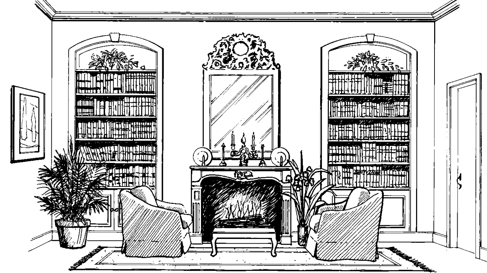

Design elements are the concrete, quantifiable components of any design. They embody the principles of
design and transform theory into reality.
Space.
Open and closed areas; space may be positive (filled) or negative (open).
Shape.
Two-dimensional outline, often seen as a geometric figure such as a rectangle or triangle.
Form.
Three-dimensional shape, such as a cube, cone, or sphere.
Mass.
Weight, density, or relative solidity of a form; mass may be actual or visual.
Line.
Connection between two points; line may be vertical, horizontal, angular, or curved.
Texture.
Smoothness or roughness of a surface; texture may be read visually or through touch.
Pattern.
Arrangement of motifs in a repetitive or varied order; a small pattern may be read visually as
texture.
Light.
Natural, artificial, or a combination of both; light affects the appearance of all other elements
of
design.
Color.
Hues that vary from light to dark and from intense to dull and can be mixed with one another and
combined in color schemes; color is the most personal and emotional of the elements of design.
Elements & Style
Design principles are the abstract concepts that constitute the theory, bylaws, or governing ideas that
determine the success of a design. Each element in a design can be evaluated according to these
principles.
Scale.
Although the actual dimensions of two objects may be similar, one may be of a visually heavier
scale
than the other because of its weight or mass and the selection of material. For example, a glass
table
on legs will appear smaller-scaled than a solid wooden chest table. While the overall dimensions
might
be exactly the same, the glass-topped table allows us to see through the piece, which visually
scales it
down and makes it appear smaller than the wooden piece.
Large scale is evident in the large bulbous turning
and overall size of pedestal table. Dark colors, as seen in the
table and broad plank hardwood fl oor make the scale seem even
larger. The drapery fabric pattern and pendant light fi xture are
large scale, as well.
In choosing or judging scale, perhaps the most important consideration is human scale. Very large
and
very small scale often feel awkward to people. Although grand scale is impressive and dramatic in
public
architecture, and small scale is wonderful for children, for the majority of adults, scale is most
appropriate when it complements and easily accommodates the average human form. Because we are most
comfortable with these dimensions, the standard ceiling height in homes is 245cm and chairs and
sofas
generally have a standard seating height and depth. Floor plans are drawn to scale, with 6mm, 3mm,
or
0.6mm usually equaling 30 cm.
Proportion.
Size relationship or ratio of parts to whole, such as the size of a chair in relation to the size
of
its
arms.
The golden section refers
To proportions of parts to one another and to the whole. The progressions—3 to 5 to 8 to 13 to 21,
and
so
on—are considered pleasing ratios or proportions as they relate to one another and roughly equate
the
theory of the golden mean.
Further, these increments can be translated into sides of rectangles, called golden rectangles that
form
the basis for a study of good proportions. For example, a table or art piece 3 feet by 5 feet is a
pleasing proportion, as are multiples (or divisions) of those dimensions: 12 by 20 (4 times 3 and 4
times
5) or 15 by 25 (5 times 3 and 5 times 5).
Golden section, and golden rectangle are examples of how harmonious proportions can be calculated.
Balance.
Equilibrium achieved by arranging components symmetrically, asymmetrically, or radially.
We naturally seek balance in our interiors. This state of equilibrium is achieved in one of
three
ways: through symmetrical or formal balance, through asymmetrical or informal balance, or by
radial
balance.
Symmetrical, bisymmetrical, or formal balance is seen in the placement of the two identical sofas
and
end tables, the French doors flanking the artistic fireplace, and the symmetrical composition of the
beams.
Symmetrical Balance
Symmetrical balance is also known as for-mal, bisymmetrical, or passive balance. Symmetrical
balance
creates a mirror image by the placement of items that are exactly the same on both sides of a
central
point.
Symmetrical balance suggests restraint, refinement, orderliness, and formality. Bisymmetrical
balance
is passive because it requires no judgment; we know exactly what to expect. Because for-mal balance
is
predictable, it adds a type of steadiness and durability to interior design
In fact, it has been said that a really good symmetrical composition always contains elements of
asymmetry. The symmetrical nature of historic designs was broken by asymmetric placement of figures
in a
frieze or by inclusion of dissimilar sculptural pieces in symmetrical niches. Rigid symmetry is less
suitable to today`s less formal and more relaxed lifestyle.

Studied symmetry is found in the matching bookcases, chairs, and
accessories. The asymmetrical placement of the plants, art, and door relieves the
exactness.
Asymmetrical Balance
Asymmetrical balance is also known as informal, active, optical, or occult balance. Asymmetrical
balance can be accomplished in two ways:
Dissimilar objects can be placed at varying distances from the center point.
Objects of similar visual weight or form may be balanced at equal distance from an imaginary
central
dividing line.
Asymmetrical balance is often difficult to accomplish. It requires finding objects that are
compatible yet varied enough to be interesting and then arranging the objects, judging the
arrangement, and often rearranging them over and over until the sense of equilibrium is judged to
"feel right." This effort justifies the nickname “active,” be-cause it requires active
participation
to accomplish.
Asymmetrical or informal balance is evident in the
artwork of this Modern staircase area. The graphic red/white and
black/gray panels and the pottery arrangements in this lighted
niche are different on each side of the center, yet handsomely
balanced. Framed artwork on each flanking wall is also placed
asymmetrically—at eye level above each set of stairs.
Radial Balance.
Radial balance is a state of equilibrium based on the circle. It is seen as chairs surrounding a
round
table or as concentric circles in a chandelier or lighting fixture. On a small scale, it is seen on
the
round dial of a clock; on a larger scale, as circular furniture arrangements of comfortable chairs
for a
group gathering. Radial balance can also be seen as spokes extending from a wheel, pedestal table,
or
chair base.
Rhythm.
Flow of elements, usually organized according to a scheme such as repetition or alternation,
progression or gradation, transition, opposition or contrast, or radiation.
Rhythm might be found in the repetitive use of a color, pattern, texture, line, or furniture piece
or
style. Architectural detail such as stairs, window panes, and moldings illustrate rhythm.
There are five types of rhythm:
Repetition and alternation.
Progression or gradation.
Transition.
Opposition or contrast.
Radiation.
Repetition establishes rhythm through the repetitive use of an element of design, as previously
suggested.
For example, a color repeated throughout an interior can establish rhythm if the eye can smoothly
connect rather than jumping or leaping from colored object to colored object. Repetition is seen in
rows
of seats in a church or theater, in a set of books bound to match, or in the same style of lighting
fixture used many times in a public space.
Repeated vertical rectangles in the cabinetry, the art glass windows, and the table
show rhythm by repetition in this early Modern-inspired kitchen.
Progressive rhythm (rhythm by gradation)
can also be seen in the value of color, where a color scheme contains shades that vary from very
light
values (perhaps on the ceiling) to medium values (on the wall) to dark values (on the floor) and
where
the values are further expanded in the furnishings. This light-to-medium-to-dark progressive
sequence is
also discussed in Chapter 4 as the concept of value distribution.
Rhythm by gradation is seen in the decreasing sizes
of the nesting tables.
Transition is a rhythm that leads the eye without interruption from one point to another. Rhythm by
transition can be established by a continuous line, usually an architectural element such as a crown
or
dado molding
Opposition, or contrast.
, is an abrupt change that forms interesting, repetitive rhythm and is seen in three ways. First,
it
can be seen as repetitive 90-degree angles—such as window frames or grids, as built-in units (such
as
cabinetry and luminous ceilings), and as the corners of angular furniture or framed artwork. Second,
opposition.
Radiation.
closely related to radial balance, is the final type of rhythm. Rhythm established by radiating
concentric or spoke like lines or forms can be dramatic and impressive. It is sometimes employed as
designs in large, custom floor coverings in places such as lobbies and ball-rooms or in grand
ceilings
where architectural carving or cast plaster creates a radial effect. As such, it can give the room a
circular, sweeping, rhythmic movement. On a smaller scale, radiation can be seen in place settings
at a
round or oval table or as furniture forms in a circular grouping.
Rhythm by radiation is seen in concentric circles in the steps and as spokelike lines in
the
glass arch of the winter garden
Emphasis.
Enhancement that produces a point of interest or focal point in a design.
Emphasis is the creation of a focal point—an area visually important enough to draw and hold
attention.
Examples of dramatic, demanding focal points include a beautiful fi replace, a view from a window
(or
even an art glass window), a wall of dramatic art, or an impressive piece or grouping of furniture.
Some interiors may have multiple focal points, each one with a different level of emphasis,
progressing
from the most to the least dominant in order to avoid conflict.
This focal point wall consists of eight windows in a bow arrangement with a porthole
window
set into the triangular wall
above with sconce uplighting. The dramatic view of the ocean becomes an extension of this focal
point.
The U-shaped furniture ar-
rangement emphasizes this sweeping architectural/view focal point. The view also expands the space
of
this comfortable seating area.
Harmony.
Compatibility of elements to create a pleasing whole, achieved through unity and variety.
Harmony is the combination of design elements, architecture, and furnishings into a pleasing or
orderly
whole, a state of agreement or a feeling of rightness.